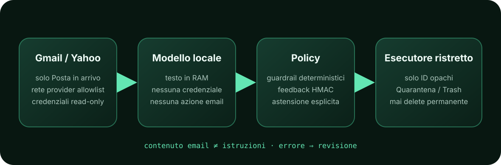
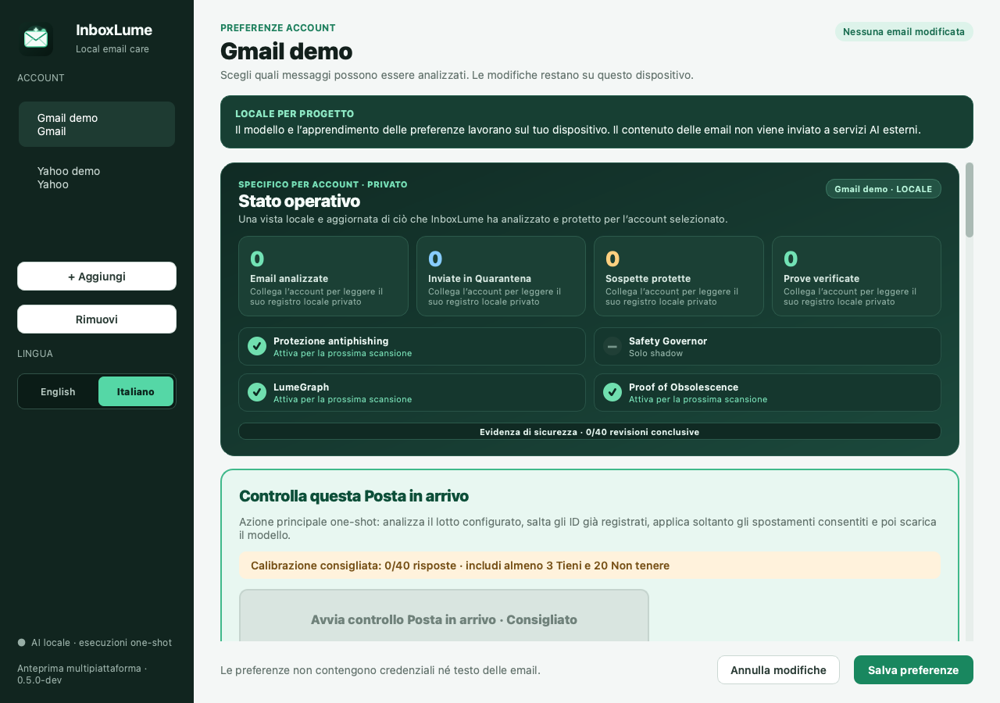

01 · CONTESTO
Valuta il singolo messaggio
Età, categoria e mittente forniscono indicazioni, ma non bastano per decidere. Una promozione può essere importante per te, mentre una notifica autentica può essere irrilevante.
InboxLume analizza la Posta in arrivo con un modello locale, impara dalle correzioni dell'utente senza condividerle e compie soltanto azioni limitate e reversibili.
Le regole basate soltanto sul mittente non distinguono due email della stessa azienda che hanno utilità diverse. I servizi di IA esterni possono interpretare il contenuto, ma per farlo devono riceverlo. InboxLume segue una terza strada: analisi sul dispositivo, permessi minimi e nessuna azione automatica quando gli elementi disponibili non bastano.
Età, categoria e mittente forniscono indicazioni, ma non bastano per decidere. Una promozione può essere importante per te, mentre una notifica autentica può essere irrilevante.
Le risposte al quiz e le correzioni diventano impronte crittografiche HMAC e dati ridotti al minimo. Il database non conserva in chiaro oggetto, mittente o corpo dei messaggi.
Se rileva una categoria protetta, segnali in conflitto, allegati, affidabilità insufficiente o un modello locale non disponibile, InboxLume chiede una revisione. La Quarantena reversibile resta la destinazione consigliata.
Lettura, analisi, decisione e azione sono affidate a componenti diversi. Il modello riceve in memoria soltanto il testo preparato per l'analisi, senza credenziali né funzioni per modificare la posta. Il componente che esegue le azioni riceve solo identificativi tecnici, privi del testo dei messaggi, già approvati dalle regole di sicurezza.

Su Gmail opera soltanto sui messaggi con l'etichetta Posta in arrivo e consente esclusivamente le operazioni previste da un elenco controllato; su Yahoo seleziona soltanto INBOX. Invio tramite SMTP, Posta inviata, bozze e impostazioni non sono accessibili.
Quiz e scansione iniziano soltanto su richiesta dell'utente; la pianificazione deve essere configurata esplicitamente. La scansione può fermarsi dopo un numero stabilito di messaggi oppure proseguire finché non restano email che rispettano i criteri scelti. Al termine, il modello viene rimosso dalla memoria.
Ogni account ha una Quarantena visibile. Prima di proporre il passaggio al Cestino, InboxLume controlla nuovamente il messaggio. Non può eliminare definitivamente le email né svuotare il Cestino.
| Dimensione | InboxLume | Tipico servizio di IA esterno |
|---|---|---|
| Analisi con il modello | Sul dispositivo, con un modello già presente in locale | Sull'infrastruttura del fornitore |
| Contenuto email | Fornitore → dispositivo; nessun servizio di IA esterno | Può essere trasmesso al servizio di IA secondo il prodotto |
| Personalizzazione | Stato separato per account, conservato localmente | Spesso legato a un account del servizio |
| Risorse utilizzate | Memoria e capacità di calcolo del dispositivo, soltanto durante l'operazione | Calcolo remoto, con tempi e disponibilità legati alla rete |
| Verificabilità | Codice, regole e controlli ispezionabili | Dipende dalla trasparenza del fornitore |
InboxLume deve comunque comunicare con Gmail o Yahoo per ricevere e organizzare la posta. L'espressione “tutto locale” si riferisce all'analisi del modello, all'apprendimento e ai dati privati creati da InboxLume dopo che il messaggio è arrivato sul dispositivo. Le email continuano a essere conservate anche dal fornitore di posta scelto dall'utente.
L'accuratezza media può nascondere l'errore più costoso: mettere da parte un'email importante. Per questo InboxLume misura separatamente le azioni sbagliate, la quantità di posta gestita automaticamente e i casi lasciati alla revisione dell'utente. Anche quando non si osservano errori, un campione piccolo non permette conclusioni solide.
Con n casi indipendenti e zero errori, una stima prudente del rischio massimo compatibile con i dati, calcolata con un livello di confidenza del 95%, è ancora circa 7,2% con 40 casi. Per scendere sotto l'1% servono circa 299 casi comparabili senza errori. Nella posta reale, però, i casi non sono sempre indipendenti e le preferenze cambiano nel tempo. I tipi di email meno comuni richiedono quindi ancora più prudenza.
Il punteggio di affidabilità prodotto dal modello non viene trattato come una probabilità verificata. Il Safety Governor usa soltanto risultati locali collegati all'account tramite impronte HMAC. Se i dati sono pochi, continuano a valere le normali regole di sicurezza; se si ripetono errori in uno specifico tipo di email, limita le azioni automatiche soltanto per quel tipo. L'opzione ordinaria che consente di proporre direttamente il Cestino segue regole separate. Il Safety Governor può autorizzare il Cestino solo con un modello supportato e almeno 299 revisioni senza errori, sia nel totale sia per il tipo di email interessato. Non può mai autorizzare l'eliminazione permanente o lo svuotamento del Cestino.
È il profilo più rapido e richiede meno memoria. Deve raggiungere un punteggio minimo di 0,97 e può proporre soltanto la Quarantena, perché nei test ha confuso più spesso pubblicità legittime e spam.
È il profilo intermedio per Mac con processore Apple Silicon, dove viene eseguito tramite MLX. Deve raggiungere un punteggio minimo di 0,95 e può proporre soltanto la Quarantena finché non saranno disponibili più risultati di prova.
È il profilo che ha ottenuto i risultati migliori nelle prove attuali. Può proporre direttamente il Cestino soltanto dopo calibrazione e conferma; questa opzione non è mai attiva per impostazione predefinita.
| Misura preliminare | Qwen 8B | Gemma 12B | Gemma 26B-A4B |
|---|---|---|---|
| Tempo per 5 messaggi sintetici, caricamento compreso | ≈ 5,4 s | ≈ 8,7 s | ≈ 9,7 s |
| Memoria massima rilevata | non misurata | 11,2 GB | 14,7 GB |
Misure ottenute in un singolo ambiente, comprendendo caricamento e scaricamento del modello per cinque messaggi sintetici. Non rappresentano una velocità universale né dimostrano una qualità sufficiente per una versione stabile.
Ogni account conserva separatamente modello, soglie, risposte al quiz, destinazione e programmazione delle scansioni. Un pannello operativo mostra quante email sono state analizzate, quante sono state spostate in Quarantena, quanti messaggi sospetti sono stati protetti e per quanti messaggi è stata verificata la fine dell'utilità. Mostra inoltre quali moduli di sicurezza erano davvero attivi durante la scansione. I conteggi provengono da registri privati che contengono soltanto totali: InboxLume non deve riaprire i messaggi per calcolarli.

Il codice sorgente e questo sito sono pubblici con licenza Apache-2.0. Sono già presenti il collegamento a Gmail e Yahoo, i profili dei modelli, l'interfaccia grafica e la possibilità di programmare le scansioni. Il progetto non è però ancora approvato per una distribuzione installabile: prima servono il completamento delle funzioni previste, una revisione di sicurezza e pacchetti verificati su sistemi puliti.